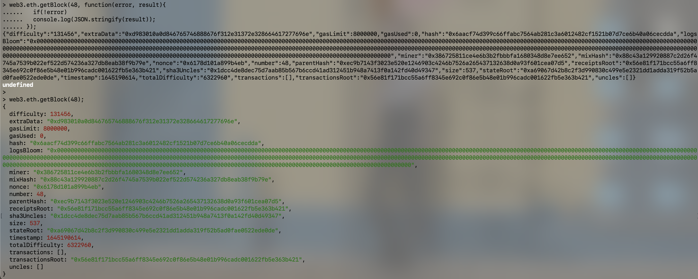
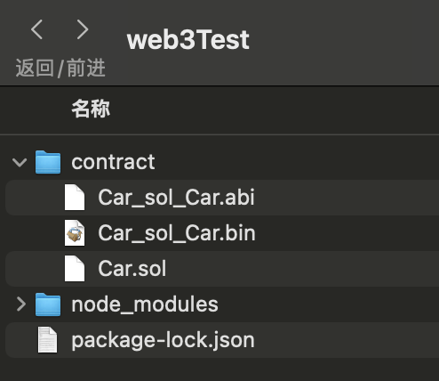

2022.2.24
web3.js API，转币脚本，监听脚本
首先需要将web3模块安装在项目中:
xxxxxxxxxx# 全局安装npm install web3@0.20.1 -g# 仅安装到这个项目中npm install web3@0.20.1 --save-dev然后创建一个web3实例，设置一个“provider”
为了保证我们的MetaMask设置好的provider不被覆盖掉，在引入web3之前我们一般要做当前环境检查(以v0.20.1为例):
xxxxxxxxxxif (typeof web3 !== 'undefined') { web3 = new Web3(web3.currentProvider); } else { web3 = new Web3(new Web3.providers .HttpProvider("http://localhost:8545"));}我们一般采用的回调风格是所谓的“错误优先”，例如:
xxxxxxxxxx// 同步回调web3.eth.getBlock(48);
// 异步回调web3.eth.getBlock(48, function(error, result){ if(!error) console.log(JSON.stringify(result)); else console.error(error);});
为了帮助 web3 集成到不同标准的所有类型项目中，1.0.0 版本提供了多种方式来处理异步函数。大多数的 web3 对象允许将一个回调函数作为最后一个函数参数传入，同时会返回一个 promise 用于链式函数调用。
以太坊作为一个区块链系统，一次请求具有不同的结束阶段。为了满足这样的要求，1.0.0 版本将这类函数调用的返回值包成一个“承诺事件”(promiEvent)，这是一个 promise 和 EventEmitter 的结合体。
PromiEvent 的用法就像 promise 一样，另外还加入了.on，.once 和.off方法
xxxxxxxxxxweb3.eth.sendTransaction({from: '0x123...', data: '0x432...'}) // 检测到交易哈希.once('transactionHash', function(hash){ })// 检测到打包进块后的收据.once('receipt', function(receipt){ })// 检测到确认.on('confirmation', function(confNumber, receipt){ })// 检测到错误.on('error', function(error){ }).then(function(receipt){ // will be fired once the receipt is mined });函数(functions）
事件(events)
xxxxxxxxxxvar batch = web3.createBatch(); batch.add(web3.eth.getBalance.request('0x0000000000000000000000000000000000000000', 'latest', callback)); batch.add(web3.eth.contract(abi).at(address).balance.request(address, callback2)); batch.execute();xxxxxxxxxxvar BigNumber = require('bignumber.js');var balance = new BigNumber('131242344353464564564574574567456'); // or var balance = web3.eth.getBalance(someAddress); balance.plus(21).toString(10); //"131242344353464564564574574567477"// (10)代表十进制，对于整数可以保证精度，而对于浮点数会导致精度缺失BigNumber对象内部格式：
xxxxxxxxxx>balance>BigNumber { s: 1, e: 32, c: [ 13124, 23443534645645, 64574574567456 ] }基本信息
查看 web3 版本
web3.version.apiweb3.version查看 web3 连接到的节点版本(clientVersion)
web3.version.nodeweb3.version.getNode((error,result)=>{console.log(result)})web3.eth.getNodeInfo().then(console.log)获取 network id
web3.version.networkweb3.version.getNetwork((err,res)=>{console.log(res)})web3.eth.net.getId().then(console.log)获取节点的以太坊协议版本
web3.version.ethereumweb3.version.getEthereum((err,res)=>{console.log(res)})web3.eth.getProtocolVersion().then(console.log)网络状态查询
是否有节点连接/监听，返回true/false
web3.isConnect() 或者 web3.net.listeningweb3.net.getListening((err,res)=>console.log(res))web3.eth.net.isListening().then(console.log)查看当前连接的 peer 节点
web3.net.peerCountweb3.net.getPeerCount((err,res)=>console.log(res))web3.eth.net.getPeerCount().then(console.log)Provider(重新设置连接到一个链接)
查看当前设置的 web3 provider
web3.currentProvider查看浏览器环境设置的 web3 provider(v1.0.0)
web3.givenProvider设置 provider
web3.setProvider(provider)web3.setProvider(new web3.providers.HttpProvider('http://localhost:8545'))web3 通用工具方法
v1.0.0开始都放进了web3.utils
以太单位转换
web3.fromWeiweb3.toWei数据类型转换
web3.toStringweb3.toDecimalweb3.toBigNumber字符编码转换
web3.toHexweb3.toAsciiweb3.toUtf8web3.fromUtf8地址相关
web3.isAddressweb3.toChecksumAddressweb3.eth – 账户相关
coinbase 查询
web3.eth.coinbaseweb3.eth.getCoinbase( (err, res)=>console.log(res) )web3.eth.getCoinbase().then(console.log)账户查询
web3.eth.accountsweb3.eth.getAccounts( (err, res)=>console.log(res) )web3.eth.getAccounts().then(console.log)web3.eth – 区块相关
区块高度查询
web3.eth. blockNumberweb3.eth.getBlockNumber( callback )gasPrice 查询
web3.eth.gasPriceweb3.eth.getGasPrice( callback )区块查询
web3.eth.getBlock(hashStringOrBlockNumber[ ,returnTransactionObjects] )web3.eth.getBlock( hashStringOrBlockNumber, callback )块中交易数量查询
web3.eth.getBlockTransactionCount( hashStringOrBlockNumber )web3.eth.getBlockTransactionCount( hashStringOrBlockNumber, callback )web3.eth – 交易相关
余额查询
web3.eth.getBalance(addressHexString [, defaultBlock]) web3.eth.getBalance(addressHexString [, defaultBlock][, callback])交易查询
web3.eth.getTransaction(transactionHash)web3.eth.getTransaction(transactionHash [, callback])web3.eth – 交易执行相关
交易收据查询(已进块)
web3.eth.getTransactionReceipt(hashString)web3.eth.getTransactionReceipt(hashString [, callback])估计 gas 消耗量
web3.eth.estimateGas(callObject)web3.eth.estimateGas(callObject [, callback])web3.eth – 发送交易
web3.eth.sendTransaction(transactionObject [, callback])
交易对象:
web3.eth – 消息调用
web3.eth.call(callObject[,defaultBlock][,callback])
参数:
xxxxxxxxxxvar result = web3.eth.call({ to: "0xc4abd0339eb8d57087278718986382264244252f",data:"0xc6888fa10000000000000000000000000000000000000000000000000000000000000003" });console.log(result);web3.eth – 日志过滤(事件监听)
web3.eth.filter( filterOptions [ , callback ] )
xxxxxxxxxx// filterString 可以是 'latest' or 'pending' var filter = web3.eth.filter(filterString);
// 或者可以填入一个日志过滤 options var filter = web3.eth.filter(options);
// 监听日志变化filter.watch(function(error, result){ if (!error) console.log(result); });
// 还可以用传入回调函数的方法，立刻开始监听日志 web3.eth.filter(options, function(error, result){ if (!error) console.log(result); });web3.eth – 合约相关 —— 创建合约
web3.eth.contract
xxxxxxxxxxvar MyContract = web3.eth.contract(abiArray); // 通过地址初始化合约实例
var contractInstance = MyContract.at(address); // 或者部署一个新合约
var contractInstance = MyContract.new([constructorParam1][, constructorParam2], {data: '0x12345...', from: myAccount, gas: 1000000});调用合约函数
可以通过已创建的合约实例，直接调用合约函数
xxxxxxxxxx// 直接调用，自动按函数类型决定用 sendTransaction 还是 call
myContractInstance.myMethod(param1 [, param2, ] [, transactionObject] [,defaultBlock] [, callback]);
// 显式以消息调用形式 call 该函数 myContractInstance.myMethod.call(param1 [, param2, ...] [,
transactionObject] [, defaultBlock] [, callback]);
// 显式以发送交易形式调用该函数
myContractInstance.myMethod.sendTransaction(param1 [, param2, ] [,transactionObject] [, callback]);监听合约事件
合约的 event 类似于 filter，可以设置过滤选项来监听
xxxxxxxxxxvar event = myContractInstance.MyEvent({valueA: 23}[, additionalFilterObject]) // 监听事件event.watch(function(error, result){ if (!error) console.log(result); }); //还可以用传入回调函数的方法，立刻开始监听事件var event = myContractInstance.MyEvent([{valueA: 23}][, additionalFilterObject], function(error, result){ if (!error) console.log(result); } );2022.2.21
Car.sol
xxxxxxxxxxpragma solidity ^0.8.0; contract Car { bytes brand=new bytes(12); uint price; constructor(string memory newBrand,uint newPrice){ brand=bytes(newBrand); price=newPrice; } function setBrand(string memory newBrand) public{ brand=bytes(newBrand); } function getBrand() public view returns(string memory) { return string(brand); } function setPrice(uint newPrice) public{ price=newPrice; } function getPrice() public view returns(uint) { return price; } }构建node_modules：npm install web3@0.20.1 --save-dev
编写合约：Car.sol，放在./contract目录
在./contract目录运行：solc --abi Car.sol，生成Car_sol_Car.abi（json）
在./contract目录运行：solc --bin Car.sol，生成Car_sol_Car.bin（字节码）
运行结果：

2022.2.21
xxxxxxxxxxkimshan@MacBook-Pro contract % nodeWelcome to Node.js v12.18.3.Type ".help" for more information.> var Web3 = require('web3');undefined> Web3[Function: Web3] { providers: { HttpProvider: [Function: HttpProvider], IpcProvider: [Function: IpcProvider] }}> var web3 = new Web3(new Web3.providers.HttpProvider('http://localhost:8545'))undefined> web3.isConnected() // 是否已经连接true> web3.version{ api: '0.20.1', node: [Getter], getNode: [Function: get] { request: [Function: bound ] }, network: [Getter], getNetwork: [Function: get] { request: [Function: bound ] }, ethereum: [Getter], getEthereum: [Function: get] { request: [Function: bound ] }, whisper: [Getter], getWhisper: [Function: get] { request: [Function: bound ] }}> 2022.2.22
先复制abi文件和bin文件内容
xxxxxxxxxxkimshan@MacBook-Pro contract % cat Car_sol_Car.abi....kimshan@MacBook-Pro contract % cat Car_sol_Car.bin....在geth里边解锁用户
xxxxxxxxxx> personal.unlockAccount(eth.accounts[0])Unlock account 0x386725811ce4e6b3b2fbbbfa1680348d8e7ee652Passphrase: true下面内容在node控制台操作(创建合约)
xxxxxxxxxx> var abi = “cat Car_sol_Car.abi”输出的内容;> var byteCode = "0x"+“cat Car_sol_Car.bin”输出的内容;> var carContract = web3.eth.contract(abi);> var diployTxObject = {from:web3.eth.accounts[0],data:byteCode,gas:1000000};undefined> var carContractInstance = carContract.new("MyCar",1234500,diployTxObject);undefined> carContractInstance.address'0x9daa31533be0de26d6ea8fc605f38d7145685347'下面内容在node控制台操作(调用合约)
xxxxxxxxxx> carContractInstance.getBrand.call()'MyCar'> carContractInstance.getPrice.call()BigNumber { s: 1, e: 6, c: [ 1234500 ] }> carContractInstance.getBrand({from:web3.eth.accounts[0]})'0x12999f1db59a614744b6b52b74f58ef503a0944fbdf4dd24725cdd216ce0bcec'2022.2.22
xxxxxxxxxxvar Web3 = require('web3');var web3 = new Web3(new Web3.providers.HttpProvider('http://localhost:8545'));
var arguments_ = process.argv.splice(2);
if(!arguments_ || arguments_.length!=2){ console.log("Parameter error!"); return;}
var _from = web3.eth.accounts[0];//var _to = web3.eth.accounts[1];var _to = arguments_[0];//var _value = 10000000;var _value = arguments_[1];
web3.eth.sendTransaction({from:_from,to:_to,value:_value},(err,res)=>{ if(err){ console.log("Error: ",err); }else{ console.log("Result: ",res); }});命令台运行记录:
xxxxxxxxxxkimshan@MacBook-Pro web3Test % node test.js 0xbb4e3e33b7dfd4b1c44173638546941ed1bb611e 1000000000000000000Result: 0xe88a7967744dcc8fde46b161558c5f0c804c89cd99cee322fbf96aee46e8a593
调用子货币合约案例：sendCoin.js
Geth需要开启转账密码模式( --http.api personal )
xxxxxxxxxxgeth --datadir ./mychain/ --networkid 15 --dev --dev.period 1 --password password.txt --http --http.api personal,eth,net,web3 console --allow-insecure-unlock 2>output.logCoin.sol
xxxxxxxxxxpragma solidity >0.4.21 <0.6.0; contract Coin { address public minter; mapping (address => uint) public balances; event Sent(address from, address to, uint amount); constructor() public { minter = msg.sender; } function mint(address receiver, uint amount) public { require(msg.sender == minter); balances[receiver] += amount; } function send(address receiver, uint amount) public { require(amount <= balances[msg.sender]); balances[msg.sender] -= amount; balances[receiver] += amount; emit Sent(msg.sender, receiver, amount); }}合约部署(主要是获取合约地址):这是我的合约地址0x6341D3f5f08B945517Cb2C564E72062DB6506809
sendCoin.js
通过外部给定参数(转帐对象,转账金额,本账户密码)来进行子代币转账
直接调用脚本查看用户余额
错误调用格式判断
xxxxxxxxxx// 连接到私链var Web3 = require('web3');var web3 = new Web3(new Web3.providers.HttpProvider('http://localhost:8545'));
// 选择运行var arguments_ = process.argv.splice(2);if(!arguments_ || arguments_.length!=3){ if(arguments_.length==0){ // 直接调用脚本不出传参数>查询账户余额 just_check=true; var _from = web3.eth.accounts[0]; }else{ // 调用方式错误 console.log('Wong Parms') return; }}else{ // 转账模式 var just_check=false; var _from = web3.eth.accounts[0]; //var _to = web3.eth.accounts[1]; var _to = arguments_[0]; //var _value = 10000000; var _value = arguments_[1]; var _password = arguments_[2];}
// 创建合约const fs = require('fs'); var code = fs.readFileSync('Coin.sol').toString()var solc = require('solc');var compiledCode = solc.compile(code);var abi = JSON.parse(compiledCode.contracts[':Coin'].interface);var CoinContract = web3.eth.contract(abi);var contractAddress = "0x6341D3f5f08B945517Cb2C564E72062DB6506809";var contractInstance = CoinContract.at(contractAddress);
// 查看余额操作console.log('accounts[0] balance: ',contractInstance.balances(web3.eth.accounts[0]).plus(21).toString(10));console.log('accounts[1] balance: ',contractInstance.balances(web3.eth.accounts[1]).plus(21).toString(10));
if(just_check==true) return
// 解锁账户web3.personal.unlockAccount(_from,_password, (err,res)=>{ if(err){ console.log("Error: ",err); }else{ console.log("Result: ",res); // 进行交易 contractInstance.send(_to, _value, {from:_from},(err,res)=>{ if(err){ console.log("Error: ",err); }else{ console.log("Result: ",res); } }); }});本地node_modules需要进行配置：
注意solc的版本需要和pragma solidity >0.4.21 <0.6.0;匹配！
xxxxxxxxxxkimshan@MacBook-Pro web3Test % npm install process --save-devkimshan@MacBook-Pro web3Test % npm install solc@0.4.22 --save-devkimshan@MacBook-Pro web3Test % npm install web3 --save-dev运行结果展示
xxxxxxxxxxkimshan@MacBook-Pro web3Test % node test.js wrongWong Parmskimshan@MacBook-Pro web3Test % node test.js 0xbb4e3e33b7dfd4b1c44173638546941ed1bb611e 10 111111accounts[0] balance: 211accounts[1] balance: 131Result: trueResult: 0x9b5fa7f7562d5f7ecf051b12e1ed3d8db01808fb04b90f966dd7f5a1ef24be88kimshan@MacBook-Pro web3Test % node test.js accounts[0] balance: 201accounts[1] balance: 141监听的脚本
test2.js
xxxxxxxxxxvar Web3 = require('web3');var web3 = new Web3(new Web3.providers.HttpProvider('http://localhost:8545'));
const fs = require('fs'); var code = fs.readFileSync('Coin.sol').toString()var solc = require('solc');var compiledCode = solc.compile(code);var abi = JSON.parse(compiledCode.contracts[':Coin'].interface);var CoinContract = web3.eth.contract(abi);var contractAddress = "0x6341D3f5f08B945517Cb2C564E72062DB6506809";var contractInstance = CoinContract.at(contractAddress);
contractInstance.Sent("latest",(err,res)=>{ if(err){ console.log("Error: ",err); }else{ console.log("Sent Event occurs: ",res); }});终端调用:先运行test2.js, 然后发起test.js脚本定义的转账, 出块后事件会被监听到
其中的args参数，是event规定的参数。
xxxxxxxxxxkimshan@MacBook-Pro web3Test % node test2.jsSent Event occurs: { address: '0x6341d3f5f08b945517cb2c564e72062db6506809', blockNumber: 823, transactionHash: '0x4fb3f803587fbdd778a7e2917307f8f53971a5699346b509b52f3fd216ce4156', transactionIndex: 0, blockHash: '0xdc1300412c9136ab1e9a9f60e20f52a38584cdbf0cca546dbb890f9b45701bab', logIndex: 0, removed: false, event: 'Sent', args: { from: '0x75ff5f62085e14713fffa2e13a1b8ddd455a1ec3', to: '0xbb4e3e33b7dfd4b1c44173638546941ed1bb611e', amount: BigNumber { s: 1, e: 1, c: [Array] } }}